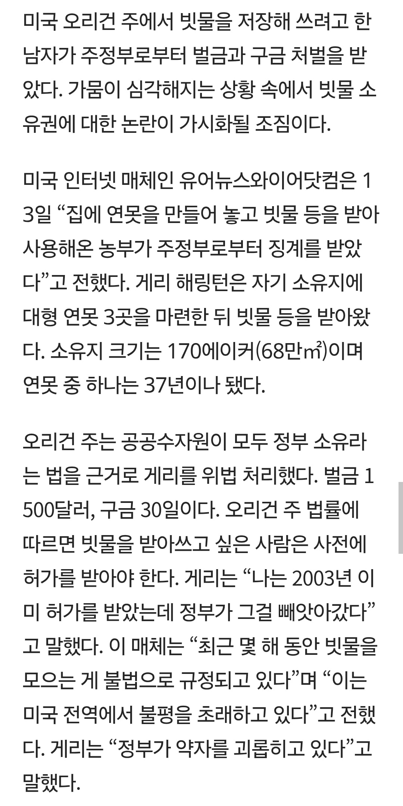
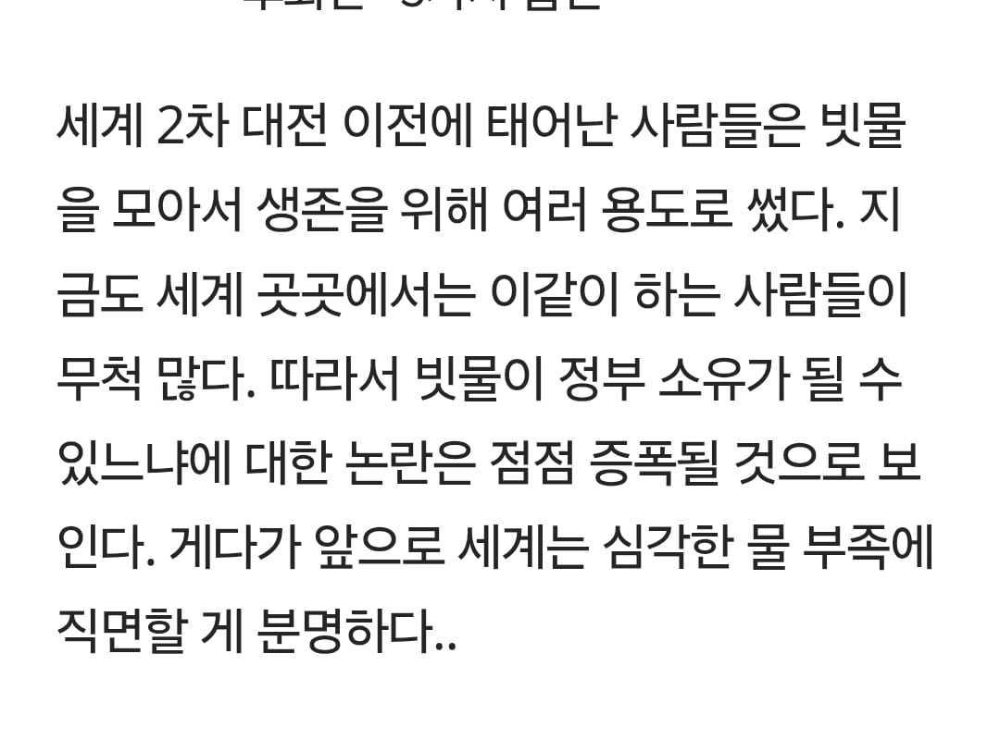
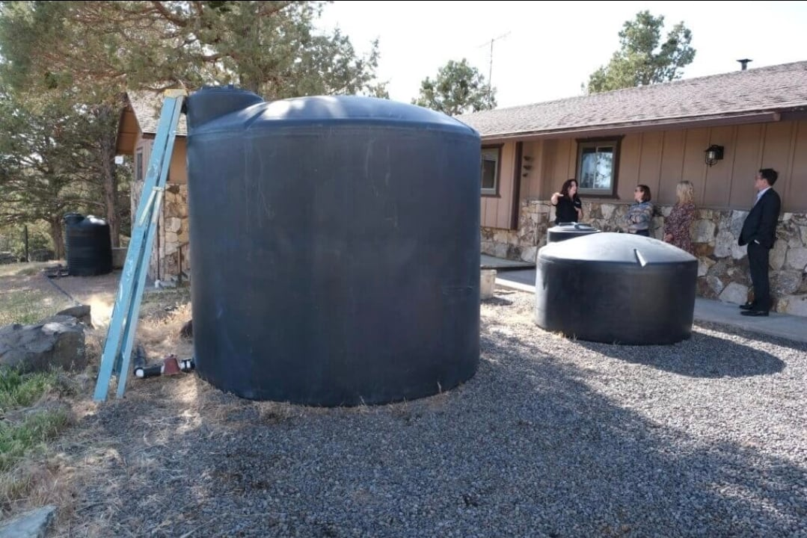
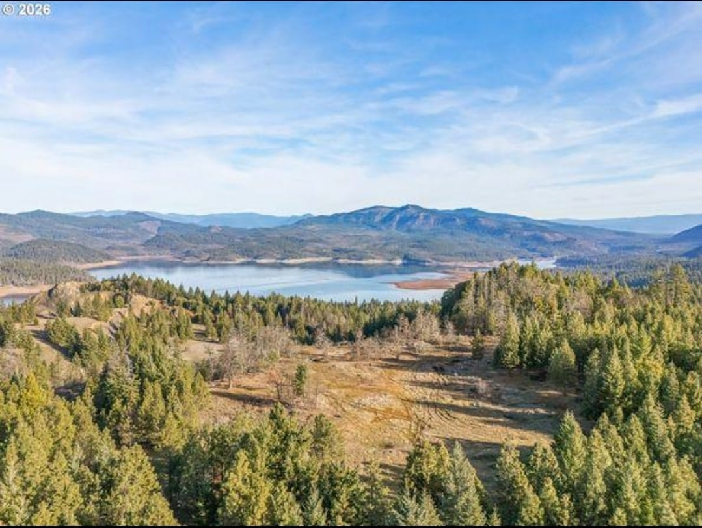

개인 소유 댐까지 건설 하고 3군데 저수지에 물을 가둬둠
이때문에 하류 사람들 피해봤는데 정부가 약자를 괴롭 혔다 이지랄




개인 소유 댐까지 건설 하고 3군데 저수지에 물을 가둬둠
이때문에 하류 사람들 피해봤는데 정부가 약자를 괴롭 혔다 이지랄
구금 30일 그냥 얌전히 살다 나와라 ㅋㅋㅋ 댐 원상복구는 하고 ㅋㅋㅋㅋ
저거 물 4만 8천톤인가 훔쳐간 거더라 ㅋㅋ
아니 ㅅㅂ 나라가 너무 하네 했는데 ㅅㅂ 댐을 지어 놨네
미국이니까 스케일 좀 크게 생각해서 서산에 있는 황곡저수지 크기 생각했는데
예산에 있는 예당저수지 크기네… 호수크기여 예당호 ㅅㅂ
ㅋㅋㅋㅋㅋ 나도 딱 예당호 생각남 딱 저모습
저게 어케 연못이냐고 ㅋㅋㅋㅋㅋㄴㅋㅋ
지 땅에 내리는 빗물을 모은게 아니라 인근 비구름이 뿌린 빗물 죄다 흐르는 길목을 막고 지땅에 가둔거네 ㅋㅋㅋ
아 댐을~ 스케일이 존나 크니까 할말이 없네 ㅅㅂㅋㅋ
그냥 대충 물탱크일 줄 알았는데 보를 세웠네 ㄷㄷㄷ
연못...맞지..?
시발 거인족 전용 연못이냐 ㅋㅋㅋㅋㅋㅋㅋ
연못가지고 지랄한다 했더니 씨이발 천조국은 국민들 클라스도 오지네 진짜 미친 ㅋㅋㅋㅋㅋㅋㅋㅋ
첫짤보고 미친놈들 저걸 신고해? 싶었는데
두번째 세번째 씹ㅋㅋㅋㅋㅋ
저게 시발 일개 개인이 만들수 있는거였다고...?
물좀 받아썼다고 구금까지 해? 싶었는데 넌 그냥 들어가라 미친놈아 ㅋㅋㅋ
땅덩이가 넓으니 개인이 저런것도 하네 ㅋㅋㅋㅋ
연못이라길래 잉어나 사는 그런 사이즈를 상상했는데ㅋㅋㅋㅋㅋㅋ 미국은 개인 단위로 하는 일도 스케일 크긴 하네
ㅅㅂ ㅋㅋㅋㅋ 머냐 이게